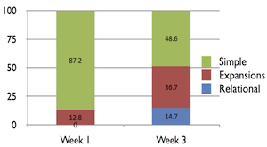

Research

Long-term Optimization of Learning Gains for Tutoring Robots
We are currently working on a research project involving robots as tutors, with the goal of using reinforcement learning techniques to provide personalization within tutoring interactions. We are specifically interested in investigating the role of user affect within adaptive tutoring interactions. We plan to use both affective and cognitive feedback from the user as reward signals -- understanding how to make use of multiple sources of reward is a key part of this project. We envision an application domain where fourth and fifth graders interact one-on-one with a social robot and practice math problems. We are working towards building an adaptive tutoring system that learns over time which actions to take for a given individual, based on their learning progress and well as their level of engagement and affective state throughout the interactions.

Socially Assistive Robots for Teaching Kids about Nutrition [ROMAN '14]
As part of an NSF Expedition in Computing, we completed a multi-site study in which we sought to understand how children engage with a social robot in an educational context. The study was a long-term interaction in which 26 children (aged 5-8) interacted one-on-one with a social robot in six different sessions over the course of three weeks. Each interaction involved the child learning about nutrition and how to make healthy food choices. We found that children had a positive reaction to the robot, which was maintained over the course of the multi-session interaction. Additionally, we found a statistically significant increase in engagement over time, as measured by the types of verbal responses used by the children.